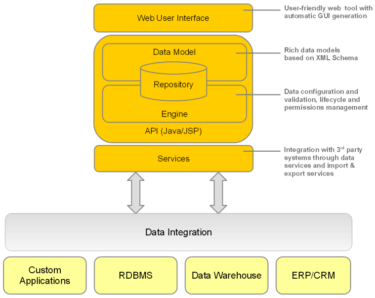

How TIBCO EBX® works
Product overview
Master Data Management (MDM) is a way to model, manage and ultimately govern shared data. When data needs to be shared by various IT systems, as well as different business teams, having a single governed version of master data is crucial.
With EBX®, business and IT users can collaborate on a single, unified solution in order to design data models and manage master data content.
EBX® is an MDM software that allows modeling any type of master data and implementing governance using the rich features included, such as collaborative workflows, data authoring, hierarchy management, version control, and role-based security.
An MDM project using EBX® starts with the creation of a data model. This is where tables, fields, links and business rules related to the master data are defined. Examples of modeled data include product catalogs, financial hierarchies, lists of suppliers or simple reference tables.
The data model can then be published to make it available to datasets, which store the actual master data based on the structure defined in the data model. Datasets are organized and contained within dataspaces, containers that isolate updates from one another. Dataspaces allow working on parallel versions of data without the modifications impacting other versions.
Workflows are an invaluable feature for performing controlled change management or data approval. They provide the ability to model a step-by-step process involving multiple users, both human and automated.
Workflow models detail the tasks to be performed, as well as the parties associated with the tasks. Once a workflow model is published, it can be executed as data workflows. Data workflows can notify users of relevant events and outstanding work in a collaborative context.
Data services help integrate EBX® with third-party systems (middleware), by allowing external systems to access data in the repository, or to manage dataspaces and workflows through web services.

EBX® architecture
The following diagram illustrates the EBX® architecture.

 User guide table of contents
User guide table of contents